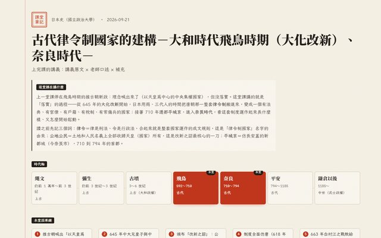
暖紙課堂筆記
L0整堂課的完整筆記，可以從頭讀到尾。
不用會形容。看到喜歡的就點，AI 會把你選的東西變成規則。講師的喜好也是這樣一張一張選出來的。
我的喜好.md 放進 範例/ 資料夾。要印出來、要手寫的看這區。

L0整堂課的完整筆記，可以從頭讀到尾。
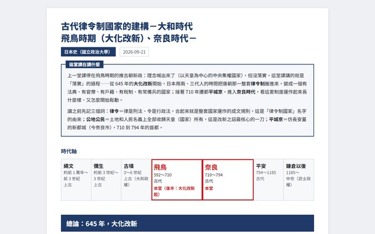
L1考前快速複習，一眼找到考點。
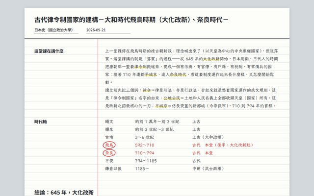
L2自己整理筆記，遮住一欄就能自我測驗。
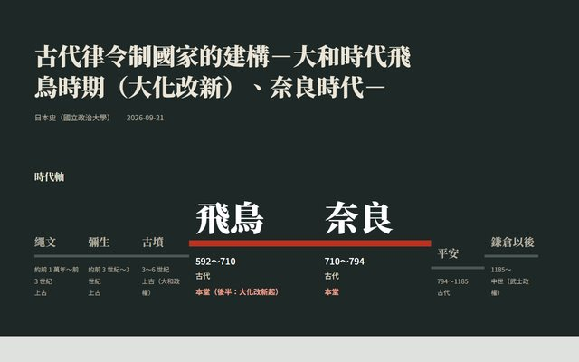
L3課前先看整個時代的全景。
L6考前用一頁看完一週重點。
L7複習完直接自我測驗，答案倒印在折線下方。
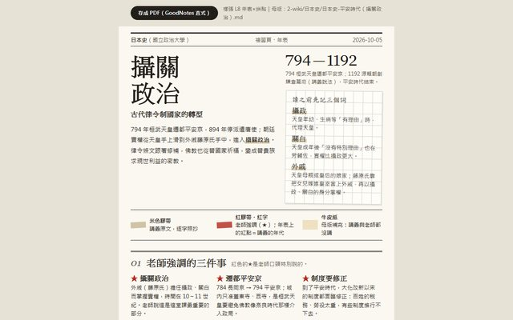
L8歷史課：年代當主軸，引文像剪報。
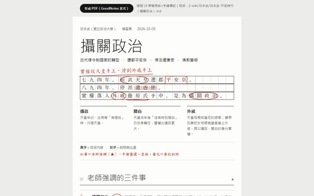
L9語言課：要默寫、要練字的內容。
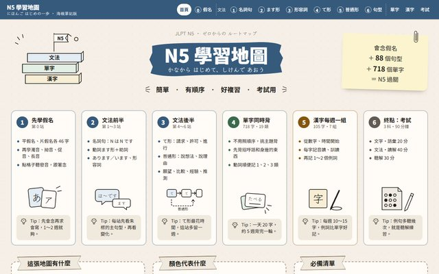
L10分站打勾追進度的自學工具，有很多分頁。
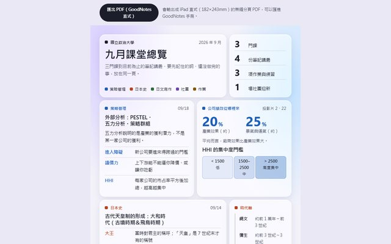
F1學期或每週總覽，每門課一個顏色。
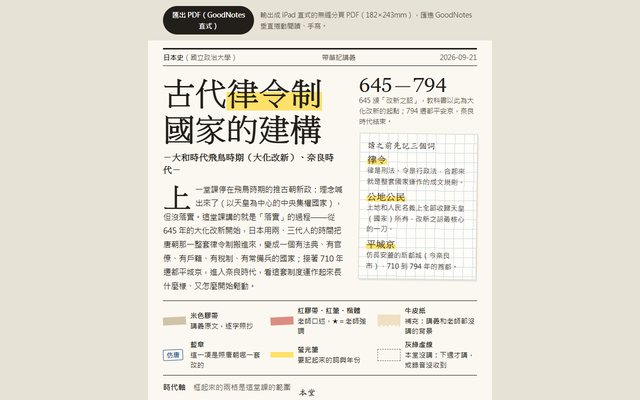
F3故事性強、有年表和史料的課。
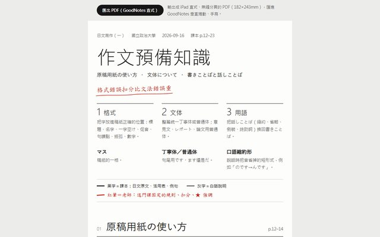
F4語言課的格式規則與抄寫練習，只有紅筆是彩色。
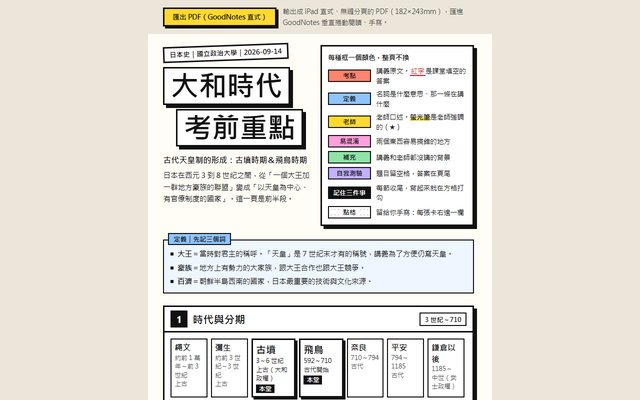
F6考前複習：每種框一種意思，附填空測驗。
要讓人讀懂一份分析的看這區。
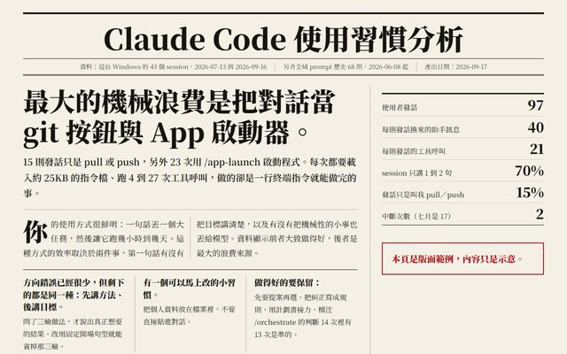
R1要讓人三秒看到最大問題的診斷或週報。
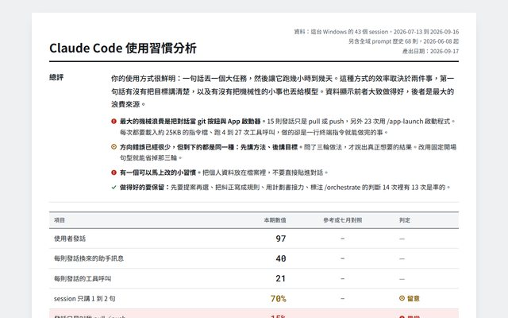
R3一批指標逐列判定，一眼看出哪裡異常。
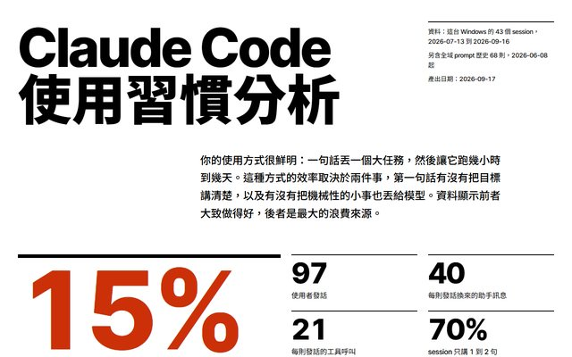
R4全頁只要讓人記住一個數字的提案。
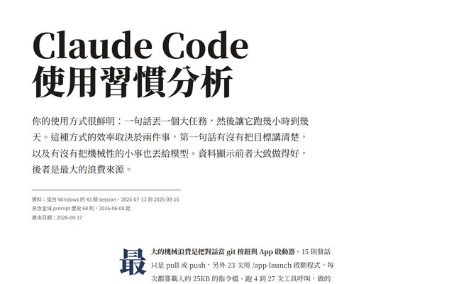
R6要讓人從頭讀完的回顧文章。
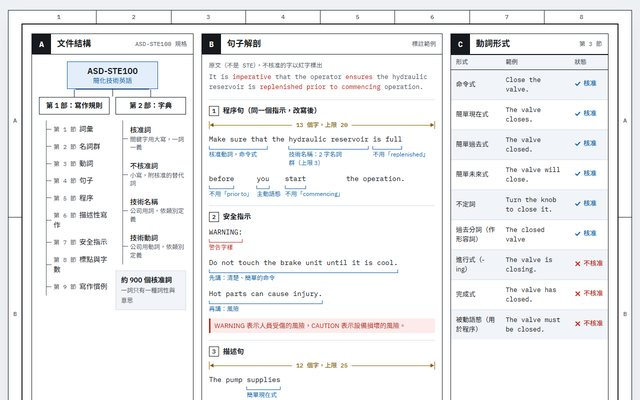
R7一頁看完一個系統或流程的全貌，切成 4 到 6 格。
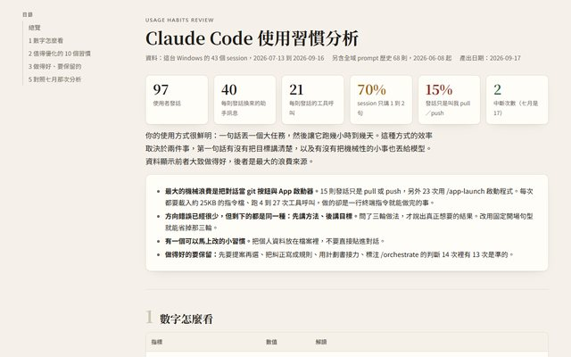
R0敘述為主的一般分析報告。
要上台講的看這區。開新分頁後按方向鍵翻頁。
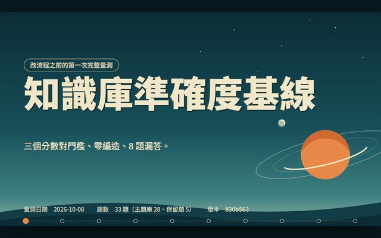
S7海報紙板的質感，想讓人記住的提案。
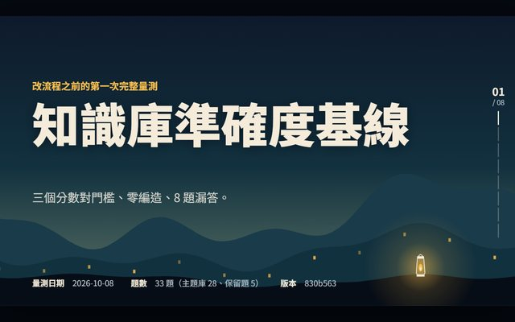
S8b要講故事的研究或提案，一步一個場景。
S9b數字當主角、要有衝勁的簡報。
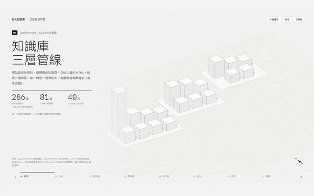
S10介紹校園、場地或系統結構，鏡頭繞著模型走。
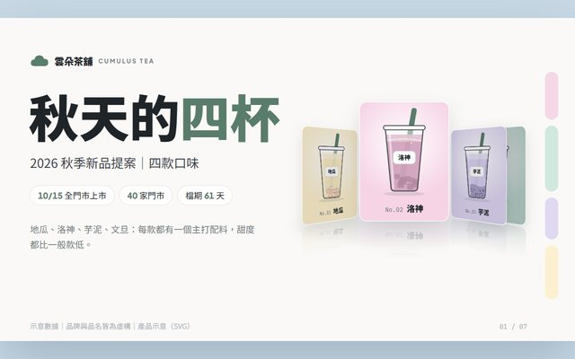
VF8輕鬆的活動或產品介紹，卡片像封面一樣疊著翻。
要反覆看數字的看這區。
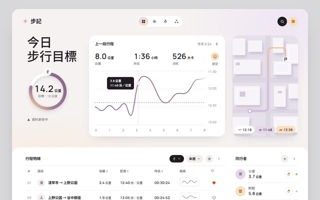
D1追一個目標的達成率，例如學習或運動進度。
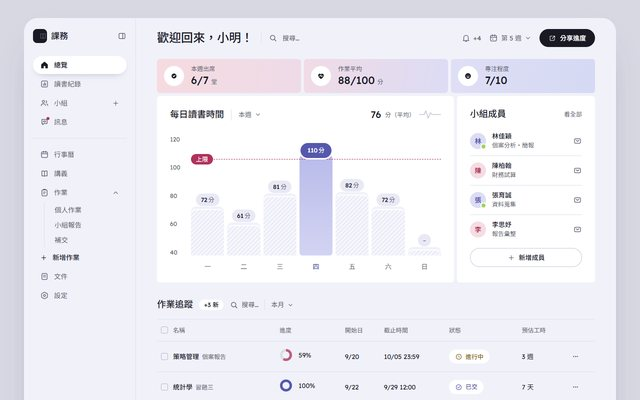
D2同時看幾個指標和逐項狀態，例如課程作業。
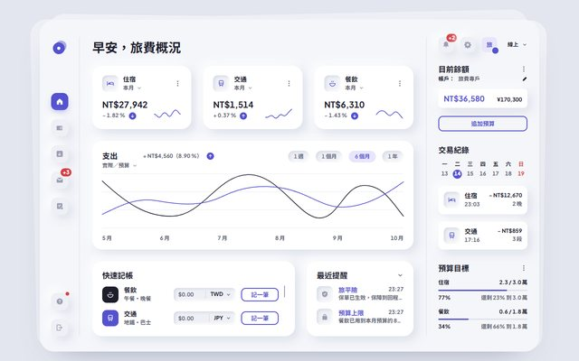
D3記帳、預算這類數字多、類別少的頁面。
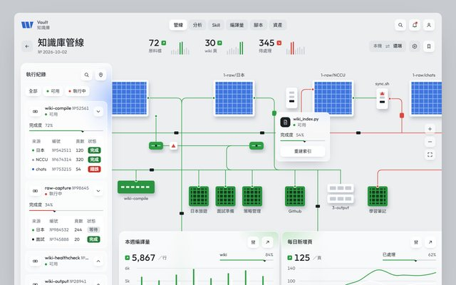
D4流程本身是主角，要一眼看出哪一段卡住。
D6b追價格走勢與多個標的的工作台。
每張色票卡有 5 個角色：底、面、主字、主色、強調。
#eee8d7#f8f4e8#16140f#16140f#b0121bP1診斷、週報這類新聞感的報告
#eef1f4#ffffff#16191d#0b5cad#c0261cP2指標、健檢、稽核報告；需要紅黃綠判定時
#ffffff#ffffff#000000#000000#cc3008P3只有一個重點數字的提案；極簡版面
#ffffff#ffffff#1b1d22#1f3a68#d0161bP4講義、考前複習；資訊類型多、每個顏色綁一種語意
#f6efe7#fffbf6#1f1c18#7a4a1e#b8331aP5敘述為主的分析頁、現行課堂講義
#f3f0eb#faf8f5#2b2a28#4f6477#954a4aP6長時間閱讀的筆記與心得，不想刺眼時
#ffffff#ffffff#0d0d1a#1f3fd1#b0106eP7給年輕受眾的提案、活動頁
#f5f2e8#fbf9f2#1a2419#1f4d34#a33b22P8旅遊、戶外、自然主題
#eef1f5#fafbfc#0f1a2e#14264a#7a580bP9正式提案、金融或面試簡報
#fbfaf5#fffffb#1f1b17#b8401d#b8401dP10日本旅遊、日文、日本史主題
#e8ecef#f6f8f9#11181f#006666#b3261eP11系統狀態、工具頁、儀表板
#f4f7fb#ffffff#0e1a2b#1b4f9c#0b4bb3P12類別少、想要克制的工具頁或報告
#f4ede1#fcf9f2#1f1b16#12585b#b2361aP13分析報告、週報、提案頁；想要比墨朱多一點顏色但仍安靜時
#eaedf0#f8f9fb#15191e#15191e#2254c1P14工具頁、規格說明、檢查清單；判定多、需要紅色專門表示失敗時
#f2efe9#faf8f5#272522#435b70#af371cP15長時間閱讀的筆記、心得、講義；想安靜但重點要看得到
#f6ede2#fdf8f2#201b16#523928#304aacP16敘述型分析頁、讀書筆記、旅遊或生活主題
#e9edf1#f7f9fb#13181e#1d3559#b43315P17正式報告、提案、面試或金融主題；要穩重又要一個亮點
#0c1326#151d33#f2eee6#f2eee6#f3b94cP19正式提案、研究分析、要講故事的簡報；展示頁的大數字
#110c1a#1c1626#f3f0f8#f3f0f8#c6a0f2P20數字當主角的簡報、產品發表、展示頁
#0f1112#191b1d#f2f3f5#f2f3f5#60a7ffP21技術簡報、工具或平台的展示頁、產品規格發表
#eee8d7#f8f4e8#16140f#16140f#b0121bP1b診斷、週報這類新聞感的報告；要判定表又要朱紅頭條時
#eef1f4#ffffff#16191d#0b5cad#b10b69P2b指標、健檢、稽核報告；需要紅黃綠判定時
#fbfaf5#fffffb#1f1b17#1f1b17#b8401dP10b日本旅遊、日文、日本史主題
這些小零件是活的，直接按按看。
GX02一般按鈕：滑過時底色從角落掃滿。
CX04展示用按鈕：滑鼠移動時傾斜，只有一個青綠色。
GX12長頁面：捲下去之後，右下角出現回到頂端的鈕。
GX03一般按鈕：滑過時像翻頁一樣翻出淺色面。
GX08展示用按鈕：彩虹字，滑鼠移動時會傾斜。
AC04按鈕放大一點再縮回，提醒你按到了。
VU01想要按下去有厚度的按鈕。
GX09儲存按鈕：滑過時磁片圖示放大、傾斜。
GX10重新整理按鈕：每按一次箭頭轉一圈。
GX11按讚按鈕：滑過時拇指擺動，點了人數加 1。
GX01開或關一眼看得出來：關是紅底、開是綠底。
VU03安靜的開關：圓鈕滑動，開啟後底色改變。
GX16多選一：選中時圓心的點放大。本頁的三選一就是這個。
GX19訂閱或提醒：鈴鐺勾選時會搖一下。
GX14粗框開關：開啟時外框和圓鈕一起變色。
GX15小開關：開啟時圓鈕縮小、變成強調色。
GX18勾選框：勾下時外圈放射六條短線。
GX20勾選框：勾號衝出框外，像用筆打勾。
GX05表單輸入：標籤會浮到欄位上方。
AC01表單填錯時，欄位左右搖一下說不對。
GX24表單輸入：點進去時底邊變粗。
GX25搜尋列：點進去底色掃滿，打字就篩選。
GX04標記讀過了沒，按錯可以按回來。
AC03告訴你存好了或出錯了，通知條從頂端滑進來。
VU04標出通過、待查核、未通過這類狀態。本頁的講師標記就是這個。
GX17看每天有沒有做：像 GitHub 的方格，滑過顯示日期和次數。
GX28行內提示：完成、注意、失敗三種，可以按 × 關掉。
AC10複製按鈕：冒出「已複製」泡泡。本頁底部的複製就是這個。
AC07任務完成時，標章左右擺一下慶祝。
GX26完成通知：三層色帶依序掃入。
GX06等待時顯示：兩根指針像時鐘一樣轉。
VU05顯示進度：細長條平滑推進，右上寫百分比。
GX22顯示連線中、已連線、離線三種狀態。
VU08等待時顯示：Loading 字樣會彈跳。
GX23等待時顯示：內外兩圈弧線對轉。
AC02清單新增一項時，新項目從下方滑上來。
AC06顯示結果時，卡片翻起來站穩。
GX27作品卡：滑過時說明條從底部長出來。
VU07要吸引注意的卡片：一道光沿著外框繞圈。
GX07講義背景：灰紙底加橫線，像筆記紙。
AC05標出剛更新的數字：閃兩下就停。
VU02文字連結：滑過時底線滑入，有 4 種動作。
VU06大數字從 0 數到目標值，適合統計數字。
AC09刪除清單項目：該列向左滑走，可以復原。
動作比較大，適合簡報和作品集，不適合要印的講義。
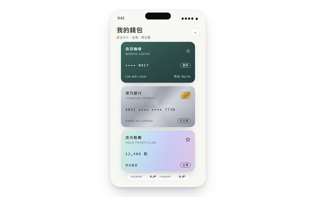
I01卡片或封面：按下去會跟著手指傾斜。
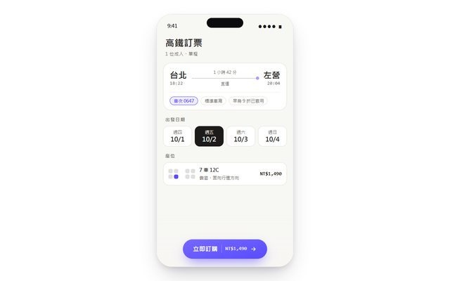
I02主要按鈕：按下後像水滴一樣展開成面板。
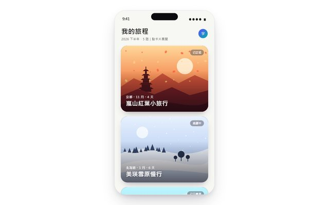
I03圖鑑、相簿：點條目，它原地放大成詳情。
I04圖表：游標吸到資料點，上方數字跟著翻動。
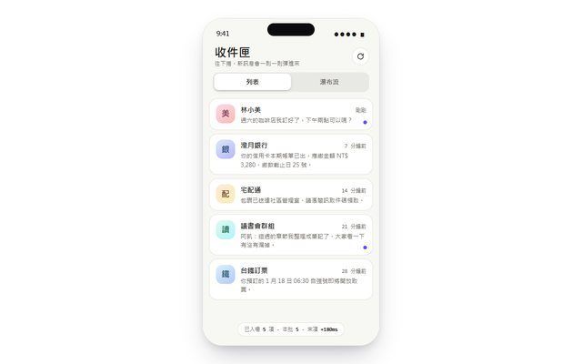
I07清單或卡片牆：一項一項彈進來。
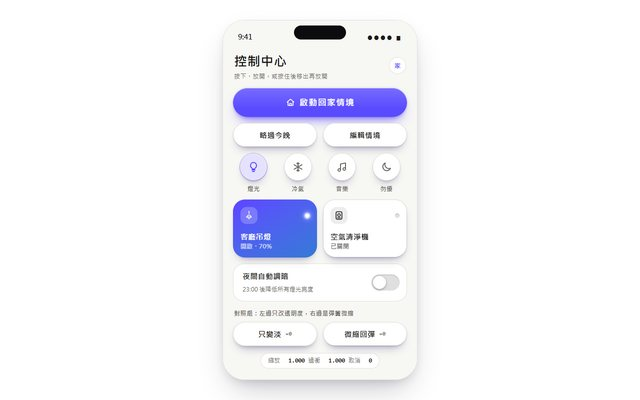
I08所有按鈕：按下縮一點，放開回彈。本頁底部的按鈕就是這個。
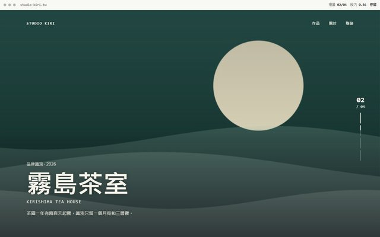
I10分章講故事：滾輪一動，畫面原地換下一幕。
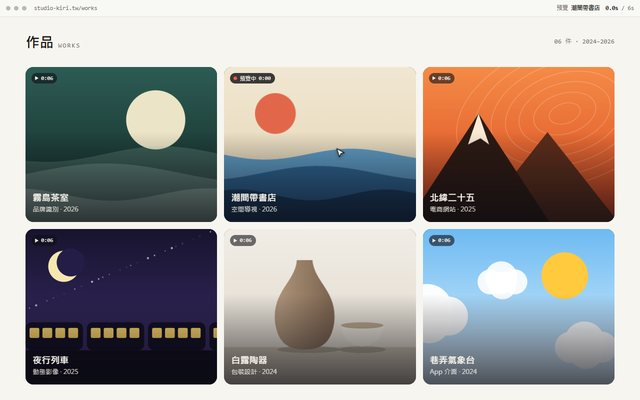
I19影片或作品列表：滑鼠停在哪格，哪格就播放。
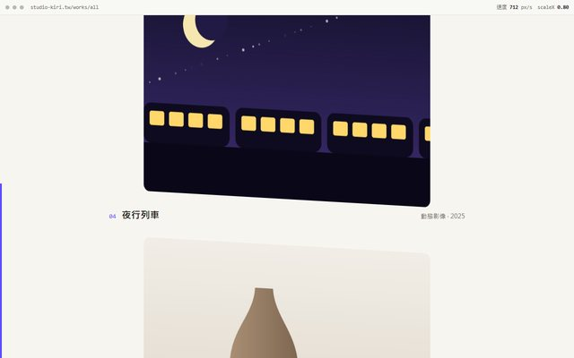
I20圖片牆：快速捲動時圖片被壓窄，手一停就彈回。
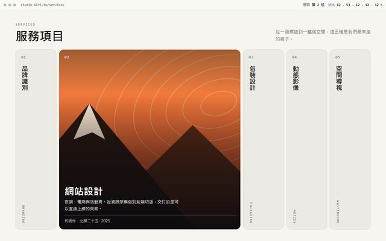
I21分類入口：滑鼠移到哪格，哪格變寬露出說明。
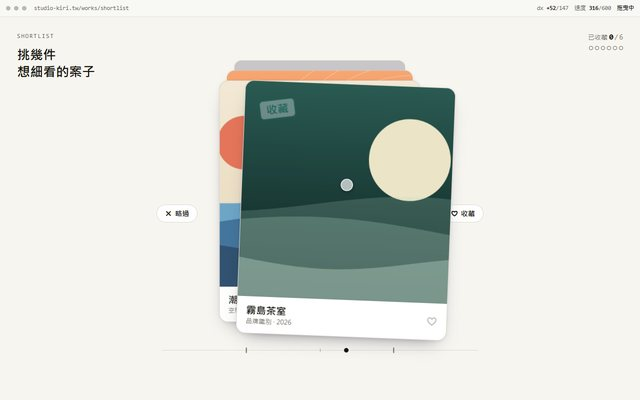
I22快速挑選：一疊卡片，把最上面一張拖走。
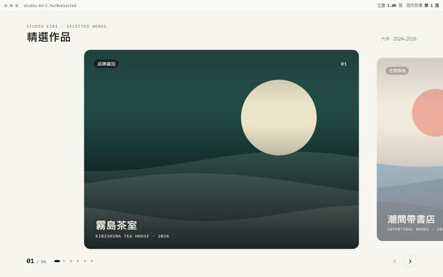
I24精選作品：一排卡片橫向滑，放手後自動對齊中間。
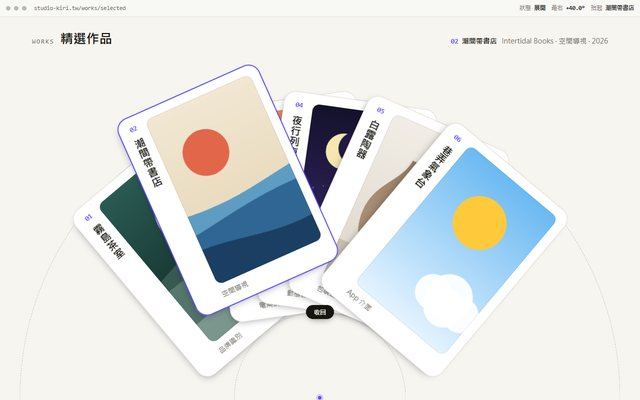
I25卡夾、相簿：一疊卡片點一下像摺扇轉開。
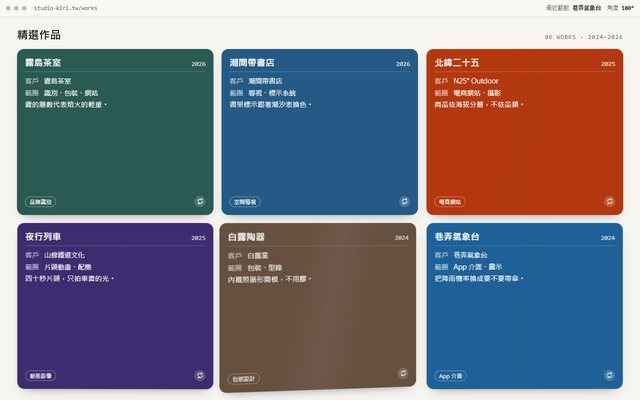
I26作品卡、記憶遊戲：點一下翻到背面。
想做作品集或活動頁的看這區。
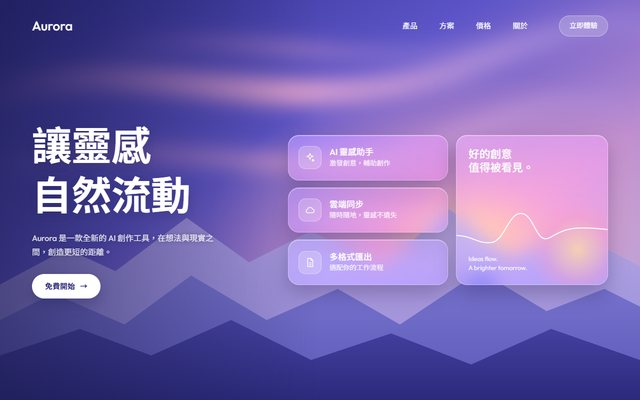
W04課程總覽：每格一件事，背景有漸層和霧面。
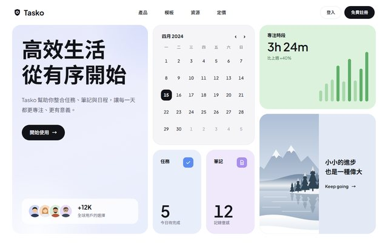
W05學期總覽、社團活動說明：每格只放一件事。
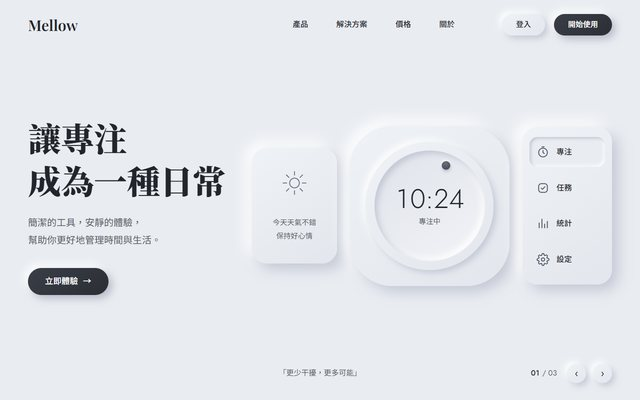
W06計時器、打卡、習慣追蹤這類小工具。
W16現場投影的開場、作品展示：字和卡片都會動。
左邊是講師填好的範例，右邊是你的。右邊會跟著你上面的選擇長出來，再自己填 6 題。
你關掉了講師的選擇。打開上方的開關就看得到這份範例。
| 用途 | 喜歡 | 不要 |
|---|---|---|
| 講義 | 參考書重點框、康乃爾筆記、粗黑框重點卡、雜誌拼貼。淺底，留手寫空間，答案直接印出來。 | 翻面才看得到答案、電子書閱讀器式版面。 |
| 報告 | 報紙頭版、健檢報告單、工程圖紙總覽。淺底、資訊密、黑體，每個顏色綁一個固定意思。 | 窄正文加側註欄、深色主控台風。 |
| 簡報 | 滾動敘事、動效主導、復古未來。深色可以，每頁一個重點，字分 3 層。 | 白底大標題加條列的模板。 |
| 儀表板 | 全部都喜歡，看盤式版面最好。數字用等寬字。 | 黑底綠字塞滿螢幕。 |
| 小工具 | 狀態徽章、彈性按鈕、上浮圓點。動作要帶著意思：選中了、存好了、複製了。 | 按鈕放大過頭、跳得很高的開關、只是裝飾的動作。 |
| 作品集 | 玻璃擬態、便當盒格子、新擬態。深色、大動效、大留白都可以。 | 內容被動效擋住讀不到。 |
| 用途 | 可以 | 不要 |
|---|---|---|
| 講義 | 沒有動畫，因為要列印。 | 任何動畫。 |
| 報告 | 載入時淡入一次、滑過時的回饋。 | 一直動的動畫、捲動才出現的內容。 |
| 簡報 | 場景切換、速度形變、彈簧入場。 | 轉場拖到 1 秒以上。 |
| 儀表板 | 數字計數、圖表入場。 | 一直閃的裝飾。 |
| 小工具 | 彈簧勾選、按壓縮放、進度條。 | 超過 1 秒的吸睛動畫。 |
| 作品集 | 大動效、滾動敘事、翻牌。 | 讓內容讀不到的動效。 |
還沒選。回到上面，點喜歡、留或不要。